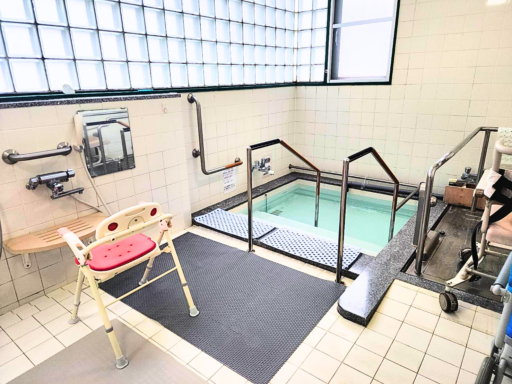

少人数で過ごしながら、食事も入浴も済ませたい方。
- 大人数のにぎやかさより、10名の規模が合う方
- 白山市の対象地域から、身近な場所へ通いたい方
- 機能訓練、昼食、入浴を一日にまとめたい方
- 月・水・金の決まったリズムをつくりたい方

白山市河内町にある、定員10名の地域密着型デイサービスです。機能訓練、昼食、入浴、ご自宅までの送迎を、一日の中で組み合わせます。
通う場所を決めるとき、設備の数だけでなく、人数や距離が合うことも大切です。河内店は10名の規模で、必要なことを一日にまとめます。
食卓と機能訓練の機器が同じフロアにあります。移動を重ねず、その日の流れを組み立てます。
ご自宅までの送迎、昼食、入浴、機能訓練に対応しています。希望する内容は見学時にご確認ください。

食卓と機能訓練の機器が同じフロアにあり、利用者さんと職員がお互いの様子を見ながら過ごします。
定員は10名です。活動内容は、その日の体調やケアプランに合わせて決めます。
一日を同じ活動だけで埋めず、食事や休息をはさみながら無理なく過ごします。


人物の顔はプライバシー保護のため加工しています。
浴室には手すり、入浴用のいす、浴槽へ入るための段差と手すりがあります。入浴の可否や介助方法は、見学・契約前に確認します。

サービス提供時間は9時30分から16時30分です。活動や入浴の順番は、その日の体調や利用内容で変わります。
河内店の入力表から、営業日の施設とお風呂の空きを表示します。利用開始日は電話で最終確認をお願いします。
| 曜日 | 施設の空き | お風呂の空き |
|---|
2026年6月版の重要事項説明書に基づく概算です。通常の提供時間に合わせて7時間以上8時間未満を選択しています。
| 事業所名 | プラトーケアセンター白山河内店 |
|---|---|
| サービス | 地域密着型通所介護・介護予防型通所サービス |
| 定員 | 10名 |
| 営業日 | 月曜日・水曜日・金曜日 |
| 営業時間 | 8:30〜17:30 |
| 提供時間 | 9:30〜16:30 |
| 所在地 | 石川県白山市河内町きりの里62 |
| 電話 | 076-220-7139 |
| 見学・相談担当 | 宮野 |
出典：河内 密着・予防 重要事項説明書・契約書 2026年6月版
希望曜日、入浴、送迎地域、料金もお電話で確認できます。